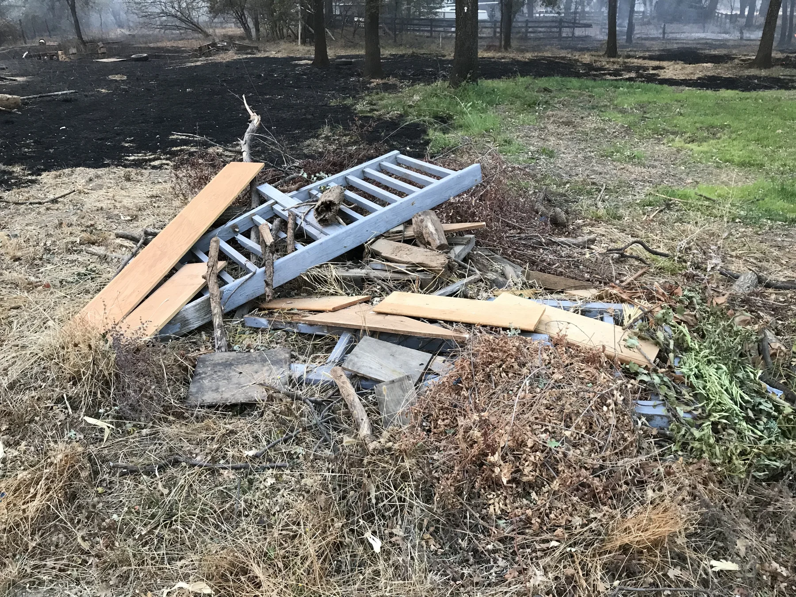
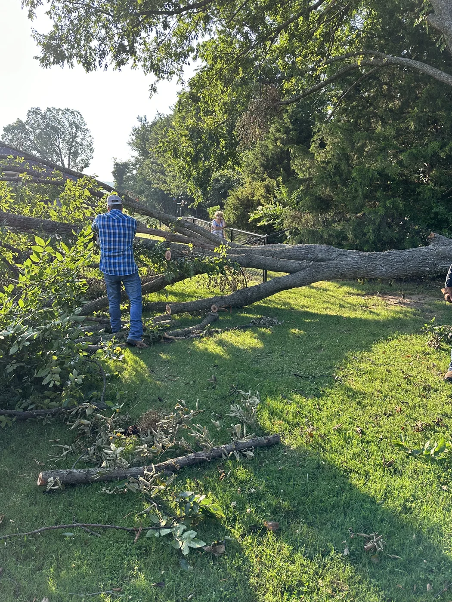
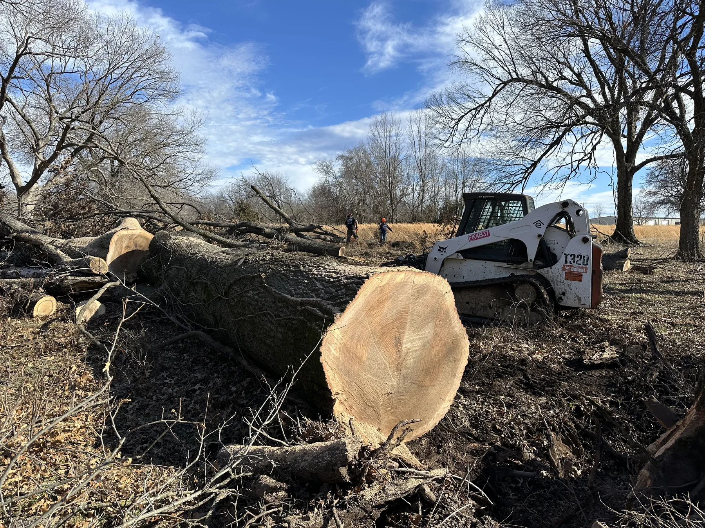
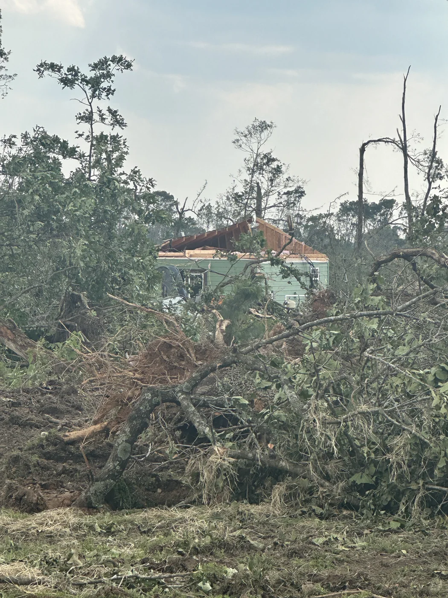
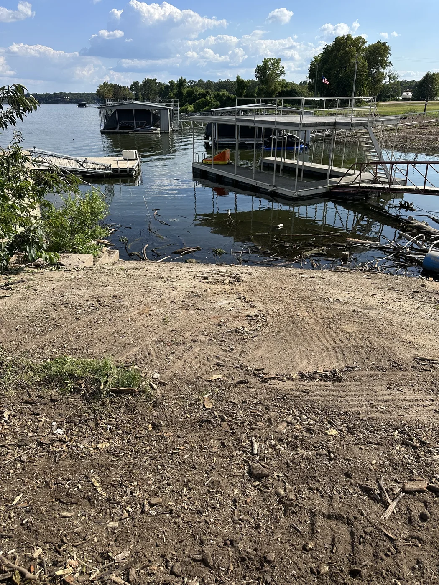
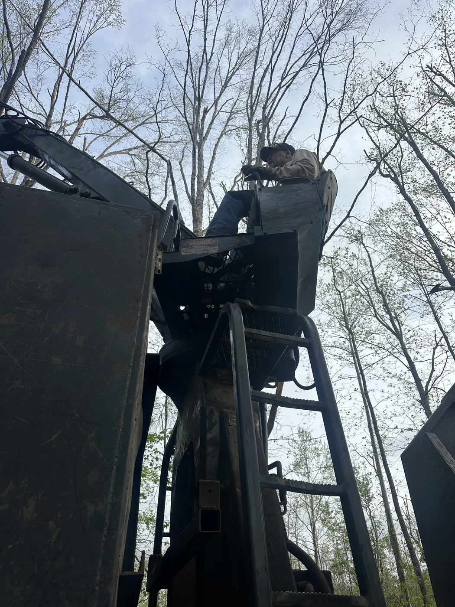

Storm & Disaster Cleanup
Storm & Disaster
Cleanup
Heavy-equipment cleanup support for properties and communities dealing with the aftermath of storms, fire, and natural disasters.
The Work
Helping clean up and move forward after disaster strikes.
This page represents multiple Rafter E storm and disaster cleanup projects rather than a single job. The work has ranged from projects lasting only a few days to larger cleanup efforts extending over several months.
Depending on the situation, the work has included storm debris removal, fallen-tree cleanup, heavy-equipment support, clearing damaged material, and helping restore access to affected properties.
In the Field
Equipment and experience when it matters.






Why This Work Matters
Helping people begin the cleanup and recovery process.
Storm and disaster cleanup requires experience, adaptability, and the ability to work safely around damaged trees, debris, structures, and changing site conditions.
“What I’m most proud of is having the skills and equipment to help people when they’re dealing with the aftermath of storms and natural disasters.”
Storm or Property Damage?